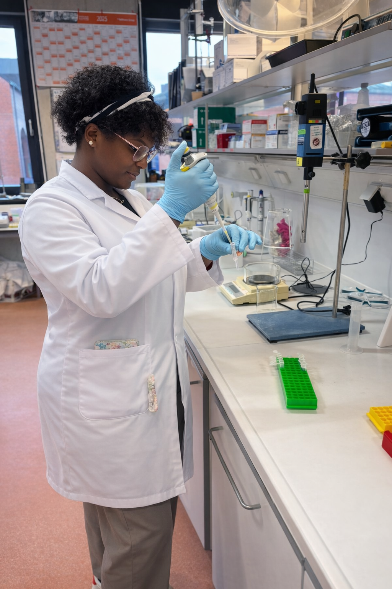

👩🏽🔬 About Me

I am a Master’s student in Biotechnology at Hochschule Bremerhaven. My academic path bridges the gap between clinical laboratory work and Medical Informatics. I specialize in turning complex biological data into actionable clinical insights.

Motherhood & Resilience
"Many assume motherhood slows down ambition. For me, it has been my greatest catalyst."
Balancing university studies with raising children has mastered my discipline and resilience. It has taught me to work with extreme precision under pressure and to prioritize goals with absolute focus. I don't just show up; I show up prepared, motivated, and unstoppable. This journey is my strength, reflecting my commitment to excellence in both my personal and professional life.
🎓 Education
M.Sc. Biotechnology
Hochschule Bremerhaven | 2025 – Present
- Molecular diagnostics, lab practice, and bioprocess engineering.
- Advanced genetics and protein biochemistry.
B.Sc. Medical Engineering (Medical Informatics)
Hochschule Bremerhaven | 2021 – 2025
- Hospital IT, medical device safety, and clinical documentation.
- Thesis: Analysis of laparoscopic IPOM vs. open umbilical hernia repair using Herniamed data.
📊 Core Projects
Bachelor Thesis: Surgical Data Analysis
Analyzed clinical outcomes and complication rates between two surgical methods for hernia repair. Focused on statistical significance and data quality in hospital registries.
Genetic Engineering Lab
Preparation of competent cells, pUC19 transformation, and blue/white selection efficiency testing.
🧪 Lab Expertise
💼 Professional Experience
Gesundheit Nord (Bremen)
Practical Semester | Medical Technology & IT
- Troubleshooting healthcare IT networks.
- Medical device management and clinical documentation.
Klinik Bassum
Thesis Researcher | Surgery Department
💻 Technical & Creative
Media & Communication
- CCB_Talk: Host and producer of community-focused podcasts.
- Creative Design: Visual identity development for personal brands (Canva).
📬 Let's Connect
I am open to opportunities in Molecular Diagnostics, Biotech R&D, or Medical Technology.
- Email: fokoucarelle@yahoo.com
- LinkedIn: Carelle Fokou
- Based in: Bremerhaven, Germany